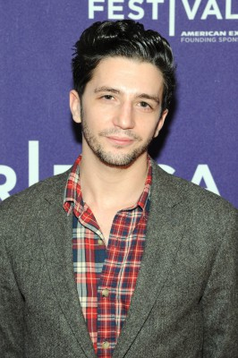
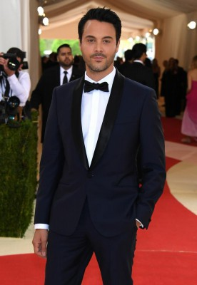
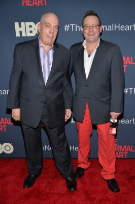

#9195 Not Fade Away


 IMDB-Wertung: 6.0 / 10
IMDB-Wertung: 6.0 / 10  Tomatometer: 71
Tomatometer: 71  Metascore: 0
Metascore: 0 
In einem kleinen Vorort von New Jersey gründet der junge, ambitionierte Douglas Damiano in den 60er Jahren mit seinen Freunden eine Band - wie so viele Jugendliche träumen sie davon, mit ihrer Musik den ganz großen Durchbruch zu schaffen und zu Superstars zu werden wie ihre Vorbilder The Rolling Stones oder The Beatles. Bis dahin ist es allerdings noch ein weiter Weg. In Zeiten des Vietnam-Kriegs befindet sich nicht nur die Musik im radikalen Wandel. Die jüngere Generation liegt aufgrund neuer Ideologien mit ihren Eltern im ständigen Clinch, heftige Auseinandersetzungen sind an der Tagesordnung. Insbesondere Douglas hat mit seinem strengen und konservativen Vater Pat ein schweres Los gezogen. Und auch die Beziehung zur bezaubernden Grace Deitz, für die er schon zu Schulzeiten schwärmte, verläuft mehr als stürmisch. Schnell muss er einsehen, dass der Weg zum Erwachsenwerden auch für einen künftigen Superstar alles andere als einfach ist.
Jahr: 2012
Dauer: 112 Minuten
FSK: 6
Land: USA Studio: Paramount VantageTonspuren: DD5.1 - ,
Untertitel:
Auflösung: 1080p (1920x1080) Größe: 7342 MB
Genre: Drama
Regisseur: David Chase
Drehbuch: Colin MacInnes
Soundtrack:
Darsteller:
-  John Magaro als Douglas
-  Jack Huston als Eugene
 Will Brill als Wells
Will Brill als Wells- Brahm Vaccarella als Joe Patuto
- Gregory Perri als Skip
 James Gandolfini als Pat
James Gandolfini als Pat Bella Heathcote als Grace Dietz
Bella Heathcote als Grace Dietz Molly Price als Antoinette
Molly Price als Antoinette- Meg Guzulescu als Evelyn
 Dominique McElligott als Joy Deitz
Dominique McElligott als Joy Deitz Christopher McDonald als Jack Dietz
Christopher McDonald als Jack Dietz Brad Garrett als Jerry Ragovoy
Brad Garrett als Jerry Ragovoy Isiah Whitlock Jr. als Landers
Isiah Whitlock Jr. als Landers- F. Michael Haynie als The Bloat
- Ken Forman als Vincent Lento
- Chris Bannow als Dave Smith
- Lisa Lampanelli als Aunt Josie
 Louis Mustillo als Johnny Vitelloni
Louis Mustillo als Johnny Vitelloni- Marylou Mellace als Aunt Louise
 John Tormey als Uncle Paul
John Tormey als Uncle Paul- Robert Funaro als Uncle Murf
- Samantha Ryan Maisano als Aunt Jean
- Anthony Giaimo als Uncle Beppy
- Meredith Forlenza als Cousin Carol
- Katherine Bralower als Card Table Girl
- Justine Lupe als Candace
- Shannon Esper als Mo Falcone
- Marissa Ghavami als Meredith
- Lucie Pohl als Severine
- Dominic Sherwood als Mick
 Julia Garner als Girl In Car
Julia Garner als Girl In Car- Randall Newsome als Mr. Gaunt
- Audrey Lynn Weston als Lisa
- Lauren Culpepper als Patty
- Ryan Munzert als Jim DeSouza
- Mike Steinmetz als Dennis
 Teddy Coluca als Dominic
Teddy Coluca als Dominic- Charlie Plummer als Grace's Little Brother
- Graham Davie als Mike
- Julia Barrett-Mitchell als Crying Girl
-  John Mainieri als Angry Dad
- Samantha Hahn als Singing Girl
- Devon Werden als Singing Girl
- Kevin Osborne als Jingle Singer
- Allen Wilson-Myers als Orlando
- Kevin Dorian als Biker
- Jordan Dean als Bob Cisco
- William Connell als Wells' Brother
- Madeline Rhodes als Doug's First Fan
- Brandon Thane Wilson als Guy At Wells' House
Datei: X:\2012(N-Z)\Not Fade Away (2012, FSK6, 1920x1080).mkv seit 19.07.2018
Festplatte: HD 2012(N-Z)-2013(A-H)
 Es gibt insgesamt 138 Filme in der Gruppe '2012(N-Z)'
Es gibt insgesamt 138 Filme in der Gruppe '2012(N-Z)'